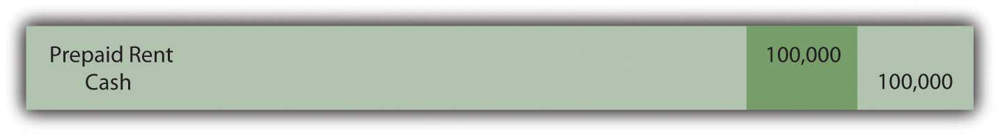

At the end of this section, students should be able to meet the following objectives:
Question: The Abilene Company has agreed to pay $100,000 per year for seven years to lease an airplane. Assume that legal title will not be exchanged and no purchase option is mentioned in the contract. Further assume that the life of the plane is judged to be ten years and that the amount to be paid does not approximate the fair value of the item. The contract is signed on December 31, Year One, with the first annual payment made immediately. This agreement does not appear to meet any of the four criteria for a capital lease. What financial accounting is appropriate for an operating lease?
Answer: None of the four criteria for a capital lease is being met in this transaction:
Thus, this lease is recorded as an operating lease. The first annual payment was made immediately to cover the subsequent year.
Figure 15.1 December 31, Year One—Payment of First Installment of Operating Lease
Because the first payment has been made, no liability is reported on Abilene’s balance sheet although the contract specifies that an additional $600,000 in payments will be required over the subsequent six years. In addition, the airplane itself is not shown as an asset by the lessee because this operating lease is viewed as the equivalent of a rent and not a purchase.
During Year Two, the future value provided by the first prepayment gradually becomes a past value because of the passage of time. The asset balance is reclassified as an expense. At the end of that period, the second payment will also be made.
Figure 15.2 December 31, Year Two—Adjustment to Record Rent Expense for Year Two

Figure 15.3 December 31, Year Two—Payment of Second Installment of Operating Lease
Question: One slight change can move this contract from an operating lease to a capital lease. Assume all the information remains the same in the above example except that the airplane has an expected life of only nine years rather than ten. With that alteration, the life of the lease is 77.8 percent of the life of the asset (seven years out of nine years). That is 75 percent or more of the life of the asset. Because one of the criteria is now met, this contract must be viewed as a capital lease. The change in that one estimation creates a major impact on the reporting process. How is a capital lease reported by the lessee?
Answer: As a capital lease, the transaction is reported in the same manner as a purchase. Abilene has agreed to pay $100,000 per year for seven years but no part of this amount is specifically identified as interest. According to U.S. GAAP, if a reasonable rate of interest is not explicitly paid each period, a present value computation is required to divide the contractual payments between principal (the amount paid for the airplane) and interest (the amount paid to extend payment over this seven-year period). This handling is appropriate for an actual purchase when payments are made over time but also for a capital lease.
Before the lessee starts computing the present value of the future cash flows, one issue must be resolved: the appropriate rate of interest to be applied. In the previous chapter, a negotiated rate was established by the buyer and seller of a bond prior to its issuance. Normally, no such bargained rate exists in connection with a lease. Therefore, the lessee uses its own incremental borrowing rate. That is the interest rate the lessee would be forced to pay if this same amount of money was borrowed from a bank or other lending institution.As explained in upper-level accounting textbooks and courses, under certain circumstances, the lessee might use the implicit interest rate built into the lease contract by the lessor. Assume here that the incremental borrowing rate for Abilene is 10 percent per year. If the company had signed a loan to buy this airplane instead of lease it, the annual interest rate demanded by the lender is assumed to be 10 percent.
Abilene will pay $100,000 annually over these seven years. Because the first payment is made immediately, these payments form an annuity due. As always, the present value calculation computes the interest at the appropriate rate and then removes it to leave the principal: the amount paid for the airplane. Once again, present value can be found by table, by formula, or by Excel spreadsheet.The mathematical formula to determine the present value of an annuity due of $1 per period is [(1 – 1/[1 + i]n)/i] × (1 + i), where i is the appropriate interest rate and n is the number of payment periods. On an Excel spreadsheet, the present value of a $1 per period annuity due for seven periods at an assumed annual interest rate of 10 percent is computed by typing the following data into a cell: =PV(.10,7,1,,1).
http://www.principlesofaccounting.com/ART/fv.pv.tables/pvforannuitydue.htm
Present value of an annuity due of $1 per year for seven years at a 10 percent annual interest rate is $5.35526. The present value of seven payments of $100,000 is $535,526.
present value = $100,000 × 5.35526 present value = $535,526Once present value has been determined, the recording of the capital lease can proceed very much like a purchase made by signing a long-term liability.
Figure 15.4 December 31, Year One—Capital Lease Recorded at Present Value
Figure 15.5 December 31, Year One—Initial Payment on Capital Lease
A comparison at this point between the reporting of an operating lease and a capital lease is striking. The differences are not inconsequential. For the lessee, good reasons exist for seeking an operating lease rather than a capital lease.
Figure 15.6 Comparison of Reported Amounts for Operating Lease and for Capital Lease
Link to multiple-choice question for practice purposes: http://www.quia.com/quiz/2092986.html
Question: In a capital lease, the property is not bought but is accounted for as if it had been purchased. Abilene records both the leased airplane and the liability at the present value of the required cash payments. What reporting takes place subsequent to the initial recording of a capital lease transaction?
Answer: As with any purchase of an asset having a finite life where payments extend into the future, the cost of the asset is depreciated and interest is recognized in connection with the liability. This process remains the same whether the asset is bought or obtained by a capital lease.
Depreciation. The airplane will be used by Abilene for the seven-year life of the lease. The recorded cost of the asset is depreciated over this period to match the expense recognition with the revenue that the airplane helps generate. If the straight-line method is applied, annual depreciation is $76,504 (rounded) or $535,526/7 years.
Interest. The principal of the lease liability during Year Two is $435,526. That is the initial $535,526 present value less the first payment of $100,000. The annual interest rate used in determining the present value was 10 percent so interest expense of $43,553 (rounded) is recognized for this period of time—the principal of $435,526 times this 10 percent annual rate. As in Chapter 14 "In a Set of Financial Statements, What Information Is Conveyed about Noncurrent Liabilities Such as Bonds?", the effective rate method is applied here. Both the asset and liability are reported as if the asset had been bought for these payments. That is the fundamental idea of a capital lease.
Figure 15.7 December 31, Year Two—Depreciation of Airplane Obtained in Capital Lease

Figure 15.8 December 31, Year Two—Interest on Lease Liability from Capital Lease
Figure 15.9 December 31, Year Two—Second Payment on Capital Lease
Link to multiple-choice question for practice purposes: http://www.quia.com/quiz/2093031.html
Following is a continuation of our interview with Robert A. Vallejo, partner with the accounting firm PricewaterhouseCoopers.
Question: In U.S. GAAP, if a lease arrangement meets any one of four criteria, the transaction is reported as a capital lease. Companies often design transactions to either avoid or meet these criteria based on the desired method of accounting. Do IFRS requirements utilize the same set of criteria to determine whether a capital lease or an operating lease has been created?
Rob Vallejo: A lease contact may well be classified differently under IFRS than under U.S. GAAP. This is an example of where U.S. GAAP has rules and IFRS has principles. Under U.S. GAAP, guidance is very specific based on the four rigid criteria established by FASB. However, under IFRS, the guidance focuses on the substance of the transaction and there are no quantitative breakpoints or bright lines to apply. For example, there is no definitive rule such as the “75 percent of the asset’s life” criterion found in U.S. GAAP. IFRS simply asks the question: have substantially all the risks and rewards of ownership been transferred? Therefore, this difference could be significant to those organizations that have designed their leases to fit into a certain category under U.S. GAAP. More of these contacts will probably be accounted for as capital leases (which are referred to as finance leases in IFRS). This issue could be resolved in the near term, as FASB and IASB are conducting a joint project to modify their respective standards by 2011.
Operating leases record amounts as they come due and are paid. Therefore, the only reported asset is a prepaid rent and the liability is the current amount due. In contrast, for a capital lease, the present value of the future cash payments is determined using the incremental borrowing rate of the lessee. That amount is recorded as both the leased asset and the lease liability. The asset is then depreciated over the time that the lessee will make use of it while interest expense is recorded (along with periodic payments) in connection with the liability.